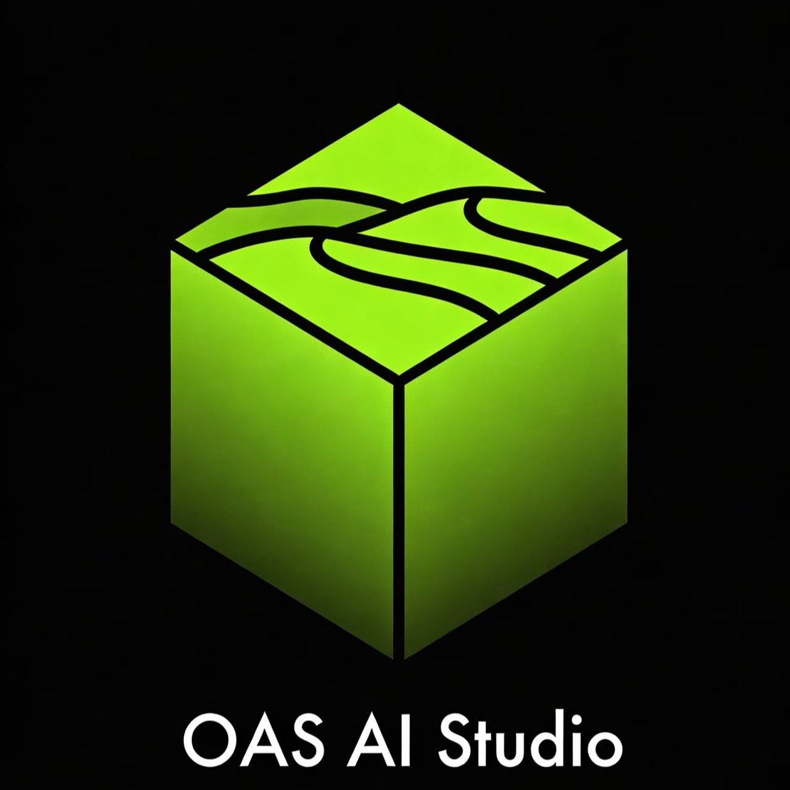

Oas AI Studio
Building the next generation of AI tools.
Open-source, lightweight, and provider-agnostic solutions for developers.
Our Products
Open Agent SDK
Open-source alternative to Claude Agent SDK. Build AI agents with TypeScript — lightweight, provider-agnostic, and fully extensible.
Explore on GitHub
ClawCycle
MoltMarketAgent-to-Agent token recycling platform. Turn idle tokens into reusable credits through P2P collaboration — contribute, earn, and save.
Visit Website